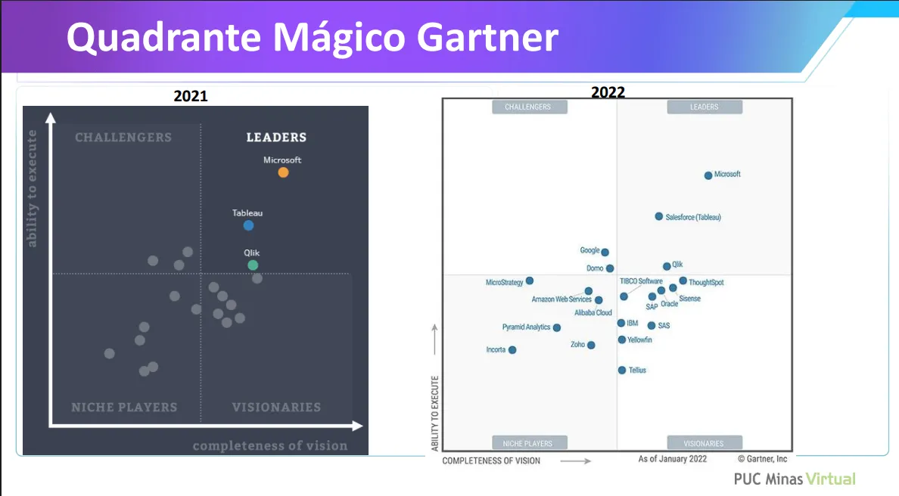

Aula 3 - Ferramentas OLAP
O Gartner Group, fundado na década de 1970, é uma empresa norte-americana de renome internacional especializada em pesquisas e consultorias na área de tecnologia da informação. Executivos e líderes de organizações no mundo inteiro acompanham de perto suas análises, pois elas influenciam diretamente decisões estratégicas sobre investimentos e adoção de tecnologias.
Entre seus estudos mais conhecidos está o Magic Quadrant (Quadrante Mágico), que classifica fornecedores de tecnologia com base em dois eixos principais:
- Capacidade de execução (Ability to Execute)
- Abrangência da visão (Completeness of Vision)
Essa classificação é dividida em quatro quadrantes:
- Leaders (Líderes): empresas com alta capacidade de execução e visão abrangente.
- Challengers (Desafiadores): boa execução, mas visão menos completa.
- Visionaries (Visionários): visão inovadora, mas ainda com lacunas na execução.
- Niche Players (Participantes de Nicho): foco em segmentos específicos, com presença limitada.
Nos últimos dois anos, considerando que esta aula foi gravada em 2023, três ferramentas mantiveram-se entre as líderes em soluções OLAP e BI, segundo o Gartner:
- Microsoft (Power BI)
- Salesforce (Tableau)
- Qlik
O gráfico a seguir apresenta o posicionamento das principais ferramentas no Quadrante Mágico Gartner para os anos de 2021 e 2022, evidenciando a consistência dessas três plataformas na liderança do mercado.

SAP – Visão Geral
O SAP é um dos maiores fornecedores globais de soluções corporativas de gestão e análise de dados, com atuação que remonta aos anos 1970. Ao longo das décadas, construiu um ecossistema robusto de aplicações ERP, gestão de processos e plataformas de Business Intelligence, tornando-se referência para empresas de grande porte e operações complexas.
No contexto de BI e OLAP, a SAP ganhou destaque principalmente com o SAP BW (Business Warehouse), lançado nos anos 1990, que foi um dos pilares do BI corporativo tradicional. O BW armazenava dados consolidados de diferentes módulos do ERP e de sistemas externos, permitindo análises avançadas por meio de:
- Cubos OLAP multidimensionais.
- Modelagem hierárquica de dimensões e medidas.
- Relatórios gerenciados e governados pela TI.
Com a evolução tecnológica e a necessidade de análises em tempo real, a SAP lançou o SAP HANA, uma plataforma in-memory que revolucionou a velocidade de processamento e a flexibilidade das análises. Essa mudança trouxe:
- Consultas analíticas em grandes volumes de dados com latência muito baixa.
- Integração de OLAP e OLTP em uma única base (translytical).
- Capacidade de consumir dados de data lakes e cloud junto aos dados corporativos.
Além disso, a SAP desenvolveu o SAP Analytics Cloud (SAC), que agrega:
- Criação de dashboards e relatórios interativos.
- Análises preditivas com recursos de IA.
- Planejamento e simulação de cenários.
Hoje, a SAP combina sua herança de BI tradicional (com forte governança e integração corporativa) com recursos modernos de análise em nuvem, mantendo-se como uma “baita ferramenta de mercado” para organizações que demandam confiabilidade, segurança e integração profunda com processos de negócio.
Oracle Business Intelligence – Visão Geral
A Oracle é uma das gigantes globais em tecnologia da informação, conhecida principalmente por seus bancos de dados, mas que também possui um portfólio robusto de soluções de Business Intelligence e análise de dados.
O Oracle Business Intelligence (Oracle BI) surgiu como uma plataforma corporativa voltada para:
- Integração de dados de múltiplas fontes.
- Criação de relatórios e dashboards.
- Análises OLAP e ad-hoc.
- Distribuição de informações de forma segura e governada.
Nos anos 2000, com a aquisição da Siebel Systems, a Oracle incorporou o Siebel Analytics, que foi a base para o Oracle BI Enterprise Edition (OBIEE) — um dos produtos mais utilizados no mercado corporativo tradicional de BI. Ele oferecia:
- Modelo de metadados centralizado (Semantic Layer).
- Suporte a cubos OLAP e bancos relacionais (ROLAP e MOLAP).
- Dashboards interativos e relatórios gerenciados.
Com a transição para a nuvem, a Oracle evoluiu para o Oracle Analytics Cloud (OAC), que combina o legado do OBIEE com recursos modernos:
- Visualização de dados mais intuitiva.
- Recursos de IA e machine learning integrados.
- Análises preditivas e self-service BI.
- Integração direta com Oracle Autonomous Data Warehouse e outros serviços em nuvem.
Hoje, a Oracle BI atende desde empresas que mantêm ambientes on-premises (com OBIEE) até organizações que migraram para a nuvem com OAC, oferecendo um ecossistema completo de análise de dados, do OLAP tradicional a insights avançados com inteligência artificial.
Pentaho – Visão Geral
O Pentaho é uma plataforma de Business Intelligence e análise de dados open source que ganhou destaque nos anos 2000 como alternativa flexível e de menor custo em relação às soluções proprietárias tradicionais. Originalmente desenvolvido pela Pentaho Corporation, foi posteriormente adquirido pela Hitachi Data Systems, passando a integrar o portfólio da Hitachi Vantara.
A proposta central do Pentaho sempre foi oferecer um ecossistema completo para todo o ciclo de dados, incluindo:
- ETL e integração de dados (Pentaho Data Integration – PDI/Kettle).
- Análises OLAP (via Mondrian OLAP Engine).
- Dashboards e relatórios interativos.
- Minerção de dados e integração com machine learning.
No contexto OLAP, o Pentaho se diferencia por:
- Uso de Mondrian, um motor OLAP open source que suporta consultas MDX e modelagem multidimensional.
- Flexibilidade para conectar-se a múltiplas fontes (bancos relacionais, NoSQL, arquivos e data lakes).
- Compatibilidade com diferentes modelos de dados (MOLAP e ROLAP).
Entre as principais vantagens do Pentaho estão:
- Custo reduzido em relação a plataformas proprietárias.
- Forte comunidade open source e documentação acessível.
- Alta flexibilidade para customizações.
Com a evolução para a nuvem e integração com big data, o Pentaho passou a oferecer conectividade com Hadoop, Spark e outras tecnologias modernas, mantendo-se relevante em cenários que exigem baixo custo, alta flexibilidade e controle total sobre a arquitetura.
Qlik – Visão Geral
A Qlik é uma plataforma de Business Intelligence e análise de dados reconhecida por seu modelo associativo único, que permite aos usuários explorar livremente conexões entre dados sem ficarem restritos a consultas pré-definidas. Fundada nos anos 1990 na Suécia, tornou-se referência global com suas soluções QlikView e, mais recentemente, Qlik Sense.
Evolução das soluções:
- QlikView (1990s–2010s): primeira geração da plataforma, com foco em dashboards e análises rápidas, baseada em um motor in-memory que carregava e processava grandes volumes de dados localmente.
- Qlik Sense (2014–presente): versão mais moderna, com arquitetura em nuvem e interface responsiva, que amplia o conceito associativo, adiciona recursos de self-service BI e maior governança corporativa.
Diferenciais da Qlik:
- Motor Associativo Qlik: diferente de OLAP tradicional (que segue hierarquias fixas), o modelo associativo permite que o usuário navegue livremente entre dimensões e encontre relações não previstas.
- Alta performance in-memory: dados carregados na memória para consultas rápidas.
- Integração híbrida: conecta-se a dados locais, na nuvem e big data.
- Visualizações dinâmicas: gráficos interativos, mapas geoespaciais e dashboards responsivos.
- Governança: controle de segurança e gerenciamento centralizado para ambientes corporativos.
Recursos OLAP no Qlik:
- Suporte a análises multidimensionais (ROLAP e abordagem híbrida com in-memory).
- Capacidade de detalhar (drill-down) e consolidar (roll-up) dados em tempo real.
- Integração com modelos de dados complexos sem necessidade de cubos físicos.
O Qlik é amplamente utilizado por empresas que buscam flexibilidade de exploração de dados combinada com governança centralizada, sendo competitivo tanto com líderes como Microsoft Power BI e Tableau quanto em nichos de análises mais exploratórias.
o Qlik, especialmente o QlikView e o Qlik Sense no modo in-memory, tende a consumir mais memória RAM do que ferramentas OLAP tradicionais que operam diretamente sobre bancos relacionais (ROLAP).
Isso acontece porque:
- Armazenamento completo na memória
- O Qlik carrega os dados para a RAM durante a abertura do aplicativo/dashboards.
- Uma vez na memória, as consultas são extremamente rápidas, mas isso exige quantidade suficiente de RAM para suportar o volume de dados carregados.
- Modelo Associativo
- Diferente de cubos OLAP fixos (MOLAP), o motor associativo mantém várias relações e índices entre tabelas para permitir navegação livre — e isso também ocupa memória extra.
- Dados desnormalizados
- Muitas implementações no Qlik usam modelos de dados mais “achatados” (denormalizados) para ganhar performance, o que aumenta o tamanho em memória.
Tableau – Visão Geral
O Tableau é uma das plataformas de Business Intelligence e visualização de dados mais conhecidas no mundo, criada em 2003 e adquirida pela Salesforce em 2019. É amplamente reconhecido pela sua capacidade de criar visualizações ricas e interativas de forma intuitiva, permitindo que usuários de negócio explorem dados com pouca dependência da área de TI.
Diferenciais do Tableau:
- Foco em visualização: interface arrastar e soltar para criar gráficos, mapas, dashboards e storytelling de dados.
- Conexão com múltiplas fontes: suporta bancos relacionais, cubos OLAP, cloud data warehouses (BigQuery, Snowflake, Redshift) e arquivos locais (Excel, CSV, etc.).
- Análises interativas: recursos de drill-down, filtros dinâmicos e parâmetros para exploração ad-hoc.
- Alta integração com OLAP: pode trabalhar tanto no modo ROLAP (consulta direta ao banco) quanto no modo extrato in-memory (Hyper Engine), que melhora a performance.
- Comunidade e ecossistema: forte comunidade de usuários, repositório de dashboards prontos (Tableau Public), treinamentos e extensões.
Uso no contexto OLAP:
- Em ROLAP, o Tableau se conecta diretamente ao data warehouse ou cubos OLAP (ex.: Microsoft Analysis Services) e processa as consultas no servidor.
- Em MOLAP ou modo extrato, carrega dados para o motor in-memory, melhorando a velocidade de análise, mas exigindo mais memória local ou do servidor Tableau.
Pontos fortes:
- Facilidade de uso e criação rápida de visualizações.
- Recursos avançados de design e interatividade.
- Boa integração com Salesforce e ecossistemas corporativos.
Pontos de atenção:
- Alto custo de licenciamento para grandes equipes.
- Necessidade de boas práticas de modelagem para manter performance com grandes volumes de dados.
O Tableau é indicado para organizações que buscam impacto visual, exploração flexível e integração com múltiplas fontes de dados, sem abrir mão da capacidade de se conectar a arquiteturas OLAP corporativas.
PowerBI - Visão Geral
O Power BI, desenvolvido pela Microsoft, é uma das plataformas de Business Intelligence mais populares e utilizadas atualmente, ocupando consistentemente posição de liderança no Gartner Magic Quadrant para plataformas de análise e visualização de dados. Lançado em 2015 como evolução do Power Pivot e Power Query (componentes do Excel), o Power BI rapidamente se consolidou como referência no mercado graças à sua integração com o ecossistema Microsoft e ao custo competitivo.
Principais características e diferenciais:
- Integração nativa com o Microsoft 365 e Azure: fácil conexão com Excel, Teams, SharePoint, SQL Server, Azure Synapse, entre outros.
- Modo de dados híbrido: pode operar em modo importação in-memory (para alta performance) ou DirectQuery (ROLAP, consultando diretamente a fonte).
- Power Query e DAX: linguagem de transformação de dados (M/Power Query) e linguagem analítica (DAX) para criação de métricas e cálculos complexos.
- Visualizações interativas: grande biblioteca de gráficos e mapas, com possibilidade de adicionar visuais personalizados (custom visuals).
- Publicação e compartilhamento: dashboards podem ser publicados no Power BI Service (nuvem) ou Power BI Report Server (on-premises).
- IA integrada: recursos como análise de sentimentos, previsão de tendências e Q&A (consultas em linguagem natural).
Uso no contexto OLAP:
- ROLAP: no modo DirectQuery, executa consultas diretamente sobre data warehouses e bancos OLAP, como SQL Server Analysis Services (SSAS) ou Azure Analysis Services.
- MOLAP: quando utilizado com cubos SSAS no modo multidimensional, aproveita agregações e cálculos pré-processados.
- Import/In-Memory: carrega dados para o mecanismo VertiPaq, otimizando consultas com compressão de memória e índices.
Pontos fortes:
- Interface amigável e fácil curva de aprendizado.
- Grande comunidade e ecossistema de parceiros.
- Preço competitivo comparado a concorrentes como Tableau e Qlik.
Pontos de atenção:
- Pode enfrentar limitações de performance em conjuntos de dados muito grandes no modo in-memory sem otimização.
- Algumas funcionalidades avançadas dependem de licenças premium.
O Power BI é indicado para organizações de todos os portes que buscam velocidade de implementação, integração com Microsoft e escalabilidade, equilibrando governança corporativa e self-service BI.